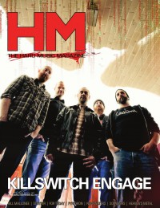
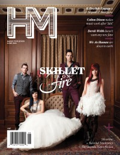

CMnexus
:
Contemporary Christian culture, music, and media.
Magazines
Profiles
Dove Awards
cmnexus.org
CM
nexus
→
Profiles
→
V
→
Doug Van Pelt
Doug Van Pelt
Writing Credits: 50 of 51
< -- Previous
Next -- >
42
43
44
45
46
47
48
49
50
51
Writing credits listing
Jul 2012 in
HM
#157
"Living Proof that all Home Schoolers aren't Drab"
Children 18:3
Aug 2012 in
HM
#158
Industry Profile:
Larry Van Pelt
"Cornerstone Fest, July 2-7"
Cornerstone
Jim Sonefeld
Flatfoot 56
7 Horns 7 Eyes
-
Throes of Absolution
Celldweller
-
Live Upon a Blackstar [DVD]
The Devil Wears Prada
-
Dead & Alive [CD+DVD]
Aug 2012 in
Heaven's Metal
#91
Joshua
-
Resurrection
Six Magics
-
Falling Angels
Join the Dead
-
Join the Dead EP
Demoniciduth
-
The Valley of Decision
Sep 2012 in
HM
#159
Owl City
-
The Midsummer Station
"August 5, Austin, TX"
Relient K
,
House of Heroes
,
hellogoodbye
,
William Beckett
Sep 2012 in
Heaven's Metal
#92
"One Way"
Mortification
"As Fast as Lightning, As Heavy as Stink"
Antidemon
Oct 2012 in
HM
#160
"Austin, Texas, October 7"
The Choir
Shiny Toy Guns
Nov 2012 in
HM
#161
"ACL Fest 2012"
Kopecky
,
NeedToBreathe
,
Aaron Ivey
,
The Civil Wars
,
Jack White
,
The Wombats
,
Weezer
,
AVICII
Blameshift
Machina
Anberlin
-
Vital
"My Name is Doug. I'm a Workaholic."
Third Day
Jan 2013 in
HM
#162
Levi The Poet
The Lee Boys
-
Testify
The Old-Timers
-
Soli Deo Gloria
Eddie Kirkland
-
Kings & Queens
Unspoken
-
Get to Me
The Rose Hill
-
Powerless
Join the Dead
-
Join the Dead EP
Feb 2013 in
HM
#163
So & So Says....:
Mark Tremonti
,
Creed
, Altar Bridge
"Guitar World"
Brad Tolinski
Mar 2013 in
HM
#164
"HM For Sale by Owner"
Future of
HM
and
Heaven's Metal
magazines
"HM Magazine Breaks Up"
Doug Van Pelt
opens up about the future of
HM
and
Heaven's Metal
magazines
Red
White Collar Sideshow
-
The Witchunt
Hearts of Saints
-
For All of Us
Jeremy Camp
-
Reckless
Mar 2013 in
Heaven's Metal
#97
"Getting the Hell Out of Metal"
In-Graved

Apr 2013 in
HM
#165
"Version 3.0"
Killswitch Engage
The Almost
-
Fear Inside Our Bones
May 2013 in
HM
#166
"Red Has the Best Seat in the House"
Red
Matt Maher
-
All The People Said Amen

Jun 2013 in
HM
#167
"Skillet Is Getting the Respect they Deserve"
Skillet
Half Hearted Hero
-
Whatever
Black Sabbath
-
13
"Former Editor Doug Van Pelt Read Five Books"
Jul 2013 in
HM
#168
Megadeth
-
Super Collider
"These Hearts Doesn't Sleep"
These Hearts
Writing Credits: 50 of 51
< -- Previous
Next -- >
42
43
44
45
46
47
48
49
50
51
CMnexus
(noun)
The magazine index
of modern music
and Christianity
© 2011 CMnexus. Last updated May 2025.
Contact:
Rants and other correspondence to:
editor -AT- cmnexus
-DØT- org
About